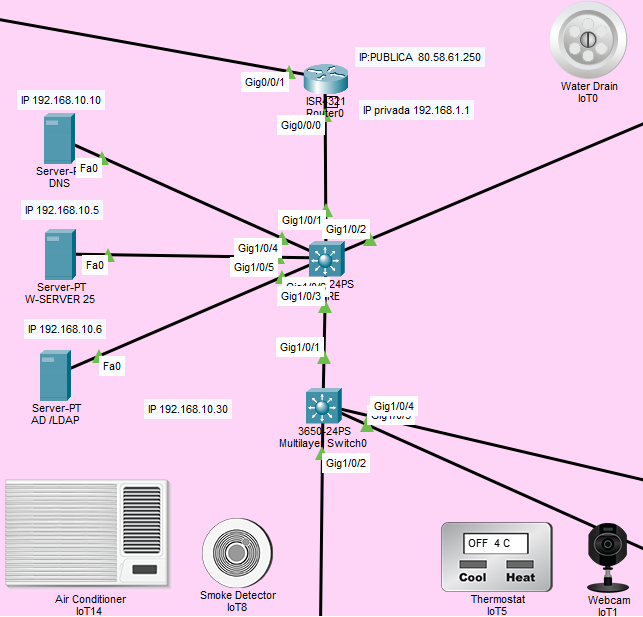

Toda la red local
La red local consta de una sala de servidores con la vlan10 yna vland20 dedicada para administración y una vlan30 dedicadad a las aulas. mas abajo desglosamos cada una de las partes de la red

Auditar equipos informáticos
La red local consta de una sala de servidores con la vlan10 yna vland20 dedicada para administración y una vlan30 dedicadad a las aulas. mas abajo desglosamos cada una de las partes de la red
En la sala de servidores (vlan10), contamos con:
